%%{init: {"themeVariables": {"fontSize": "25px"}, "flowchart": {"rankSpacing": 45, "nodeSpacing": 35, "padding": 20, "curve": "linear"}}}%%
flowchart LR
X["Image x"] --> E["Encoder"] --> Z(("z")) --> D["Decoder"] --> R["Reconstruction"]
classDef net fill:#dceeff,stroke:#2878c8,stroke-width:2px,color:#17212b;
classDef latent fill:#e9e2f3,stroke:#7655ad,stroke-width:2px,color:#17212b;
class E,D net;
class Z latent;
Variational Autoencoders
Learning a latent space we can sample
Dr. A. Belcaid
Variational Autoencoders
CHAPTER 11 · GENERATIVE MODELS
Learning a latent space we can sample
We learned to reconstruct an image. How do we generate one without an input?
Dr. A. Belcaid
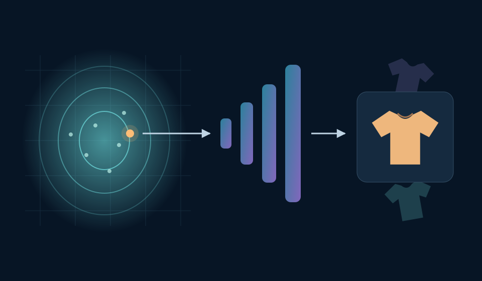
A first-level map of the lecture
01
From reconstruction to generation
02
From one code to a distribution
03
Learning to reconstruct—and to sample
04
Backpropagating through a random draw
05
Building and training a VAE
06
Sampling, interpolation, and limitations
01 · From reconstruction to generation
We can reconstruct an image we already have
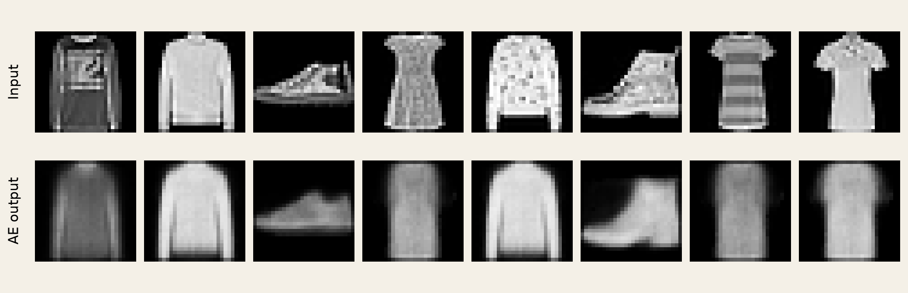
\(x \xrightarrow{\text{encoder}} z \xrightarrow{\text{decoder}} \hat{x}\) — the input gives us a starting point.
Remove the input. Where does an image come from?
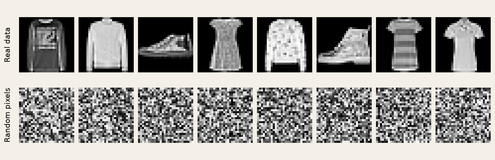
An image distribution must capture relationships between pixels.
Let the decoder provide the structure
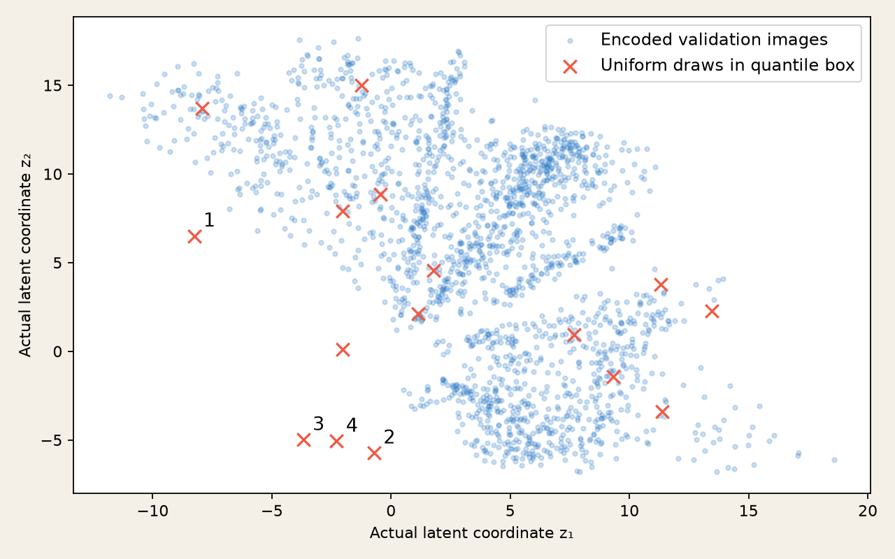
Blue points
Encode real images.
Orange crosses
Draw new codes.
Same decoder.
No input image.
Predict the outputs.
Actual AE coordinates, not PCA · 2,000 validation images · uniform draws inside the 1st–99th percentile box · seed 211.
Valid codes do not guarantee useful samples
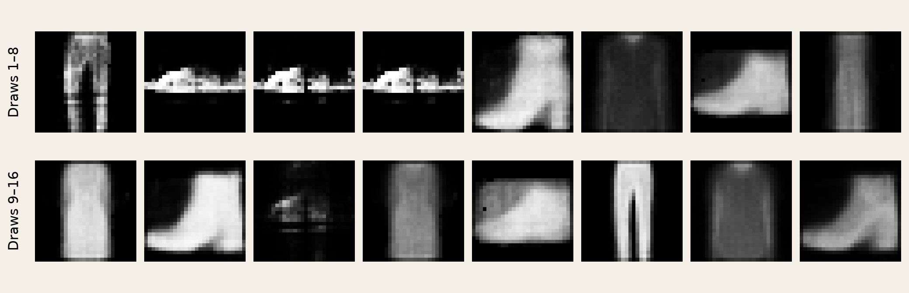
Reconstruction learned a decoder—not a reliable rule for drawing its inputs.
Choose where to draw; learn what to draw
1 · DRAW A CODE
→
\(z\)
\(z \sim p(z)\)
A known sampling rule
2 · DECODE
→
\(p_\theta(x\mid z)\)
Learned image distribution
3 · PRODUCE AN IMAGE
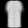
\(x \sim p_\theta(x\mid z)\)
Here: display the decoder meanNo input image is needed at generation time. The decoder still had to learn from images.
Course diagram based on Kingma & Welling, Auto-Encoding Variational Bayes (2014), §2.1. Image: actual course VAE preview.
A fresh draw, without an input image
FIXED-SEED VAE PREVIEW · d = 2
No training or inference in the browser.
Draw 1 / 16
Loading the recorded code…
Same trained decoder.
Only the latent code changes.
No training or inference in the browser.
Recognizable variation is possible. Sharpness, diversity, and coverage still need checking.
Course experiment · Fashion-MNIST, 50k train · VAE, 10 epochs · z ∼ N(0, I) · decoder means, not pixel draws.
A plausible image is only the first check
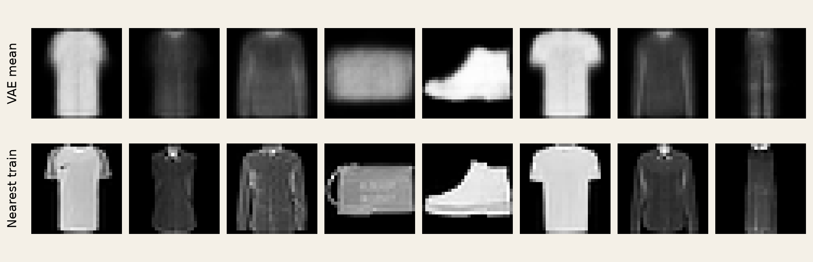
Check plausibility, variation, and resemblance to training data—not just one attractive sample.
Which machine can start without an image?
A held-out image → encoder → code → decoder
B draw a stored training code → decoder
C draw from a prior → trained decoder
For each path: does it need a new input image, and what limits its outputs?
PAUSE90 secondsSeparate “no new input” from “new latent codes.”
WORKED SOLUTION
A: Yes—reconstruction remains tied to the supplied image.
B: No new image—but a deterministic decoder repeats a finite collection of reconstructions.
C: No image—new codes are possible; useful outputs depend on learning compatibility with the prior.
If generation needs no encoder, why train one? → Section 02
02 · From one code to a distribution
What changes inside the encoder?
FAMILIAR AUTOENCODER · one code per image
PROBABILISTIC ENCODER · describe possible codes, then draw one
%%{init: {"themeVariables": {"fontSize": "25px"}, "flowchart": {"rankSpacing": 45, "nodeSpacing": 35, "padding": 20, "curve": "linear"}}}%%
flowchart LR
X["Image x"] --> E["Encoder<br/>features"]
E --> M["μ(x)"]
E --> S["σ(x)"]
M --> Q["Gaussian<br/>qφ(z ∣ x)"]
S --> Q
Q -->|draw| Z(("z")) --> D["Decoder"] --> R["Mean<br/>image"]
classDef net fill:#dceeff,stroke:#2878c8,stroke-width:2px,color:#17212b;
classDef latent fill:#e9e2f3,stroke:#7655ad,stroke-width:2px,color:#17212b;
class E,M,S,D net;
class Q,Z latent;
\(q_\phi(z\mid x)\) approximates the model’s posterior \(p_\theta(z\mid x)\):
which codes could account for this image?
Course diagrams based on Kingma & Welling (2014), §§2.1, 3. Displayed reconstruction = decoder mean.
Same image. Same encoder. Another code?
Draw 1 / 8
Loading recorded encoder outputs…
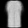
Fixed input → fixed μ and σ. The sampled z can change.
The encoder describes a distribution; the decoder receives one point from it.
Actual course experiment · Fashion-MNIST · d = 2 · separate 10-epoch VAE run · first validation item of each named class; 8 fixed-seed draws each. Recorded decoder means.
Read the distribution before drawing a code
\(q_\phi(z\mid x)=\mathcal N\!\left(\mu(x),\operatorname{diag}(\sigma^2(x))\right)\)
For one image: \(\mu=(1,-0.5)\) and \(\sigma=(0.25,1)\).
Which coordinate varies more? Give each mean ± one standard deviation interval.
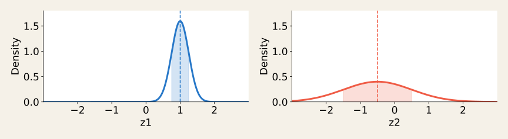
PAUSE60 secondsRead location and width separately; compare spread, not peak height.
WORKED SOLUTION
\(z_1: [0.75,1.25]\) · \(z_2: [-1.5,0.5]\)
\(z_2\) has 4× the standard deviation and 16× the variance.
Each interval contains about 68% of its marginal Gaussian; neither is a hard limit.
Course-made numerical illustration, not fitted values. “Diagonal” assumes conditional independence of coordinates for this fixed image.
Two heads describe the Gaussian
For a batch of 32 images
Shared features
h: [32, 128]
Two parameter heads
μ: [32, 2]
log σ²: [32, 2]
One draw per image
z: [32, 2]
PYTORCH · ENCODER CONTRACTd = 2
class GaussianEncoder(nn.Module):
def __init__(self):
super().__init__()
self.features = nn.Sequential(
nn.Flatten(),
nn.Linear(784, 256), nn.ReLU(),
nn.Linear(256, 128), nn.ReLU())
self.mu = nn.Linear(128, 2)
self.logvar = nn.Linear(128, 2)
def forward(self, x):
h = self.features(x)
return self.mu(h), self.logvar(h)
mu, logvar = encoder(x)
sigma = (0.5 * logvar).exp()
q = torch.distributions.Normal(mu, sigma)
z = q.sample() # forward draw only
\(\ell=\log\sigma^2 \;\Rightarrow\; \sigma=\exp(\ell/2)>0\)
The decoder still takes two coordinates. Gradients through sampling: section 04.
Architecture matches the recorded experiment. PyTorch Normal takes standard deviation as scale, not variance.
Which distribution supplies the code?
AN IMAGE IS OBSERVED
\(z\sim q_\phi(z\mid x)\)
Its encoder predicts μ(x), σ(x).
NO IMAGE IS SUPPLIED
\(z\sim p(z)=\mathcal N(0,I)\)
A fixed prior supplies a new code.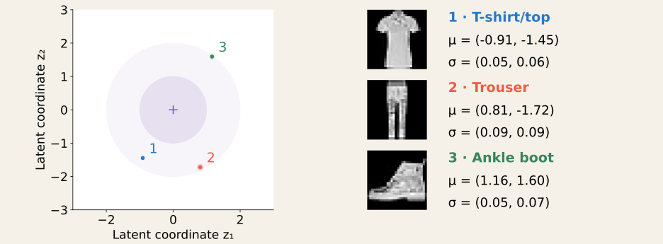
We need informative codes for each image and a usable prior-to-decoder path. → Section 03
03 · Learning to reconstruct—and to sample
Good reconstruction. Useful prior samples?
Same architecture, initialization,
data order, and 10 epochs.
Same inputs and latent noise
when comparing outputs.
Validation reconstruction cost
…
Mean over 1,024 images × 8 draws.
Lower is better for this score.
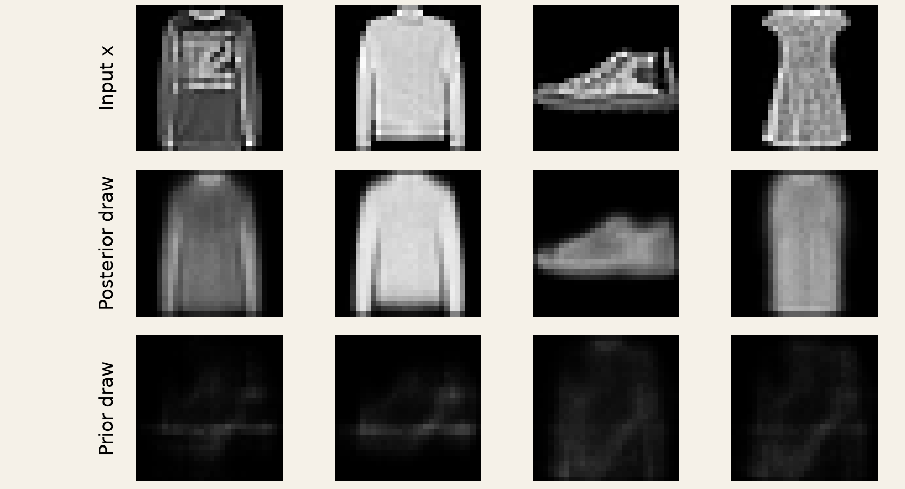
Reconstructing from \(q_\phi(z\mid x)\) does not by itself train useful decoding from \(p(z)\).
Score the image across possible codes
One observed image. Three posterior draws. Which score should training trust?
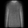
…
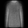
…
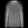
…
\(R(x)=\mathbb E_{z\sim q_\phi(z\mid x)}[-\log p_\theta(x\mid z)]\)
Average the cost over draws—not the images before scoring.
Three-draw estimate: loading…
Give the observed image high likelihood under codes its encoder proposes.
Actual section-2 VAE · first validation image · first 3 fixed-seed draws. Shown costs use summed-pixel soft-target BCE; the equation states the probabilistic objective.
What does the prior penalty actually penalize?
One latent coordinate
Can moving the mean fix
a spread mismatch?
\(K(x)=D_{\mathrm{KL}}\!\left(q_\phi(z\mid x)\,\|\,p(z)\right)=\mathbb E_q\!\left[\log\frac{q(z\mid x)}{p(z)}\right]\)
MEAN COST · ½ μ²…
+
SPREAD COST · ½ (σ² − 1 − log σ²)…
=
KL · NATS…
Zero at μ = 0, σ = 1. Narrower is not always better. For diagonal \(q\), add the coordinate costs.
Exact Gaussian calculation, not model inference. Kingma & Welling (2014), Appendix B. KL averages a log density ratio under q; it is not symmetric.
Which proposal earns the lower total cost?
Minimize \(J(x)=\underbrace{R(x)}_{\text{reconstruct}}+\underbrace{K(x)}_{\text{prior penalty}}\)
Two proposals for one image; \(p(z)=\mathcal N(0,I)\), \(d=2\).
Average the three reconstruction costs, calculate KL, then choose the lower total.
| Proposal | Three reconstruction costs | μ | σ |
|---|---|---|---|
| A | 4, 5, 6 | (1, 0) | (0.5, 1) |
| B | 5, 6, 7 | (0, 0) | (1, 1) |
\(K=\tfrac12\sum_j(\mu_j^2+\sigma_j^2-1-\log\sigma_j^2)\) · \(\log(0.25)\approx-1.386\)
PAUSE90 secondsUse pixel-summed costs per image; round the final totals to 0.01.
WORKED SOLUTION
A: \(R=5\), \(K=\tfrac12(1+0.25-1+1.386)=0.818\) → \(J\approx5.82\).
B: \(R=6\), \(K=0\) → \(J=6.00\).
A wins: its reconstruction gain of 1 exceeds its extra KL cost of 0.818.
Illustrative costs in nats per image, not Fashion-MNIST measurements. Coefficient 1 on KL gives the standard negative-ELBO objective when R is a valid expected negative log likelihood.
Why this sum? It bounds the evidence
EXACT TOY MODEL · observed x = 1
For a neural decoder, the latent integral usually is not.
Two possible latent states, A and B.
| z | p(z) | p(x = 1 ∣ z) |
|---|---|---|
| A | 0.5 | 0.8 |
| B | 0.5 | 0.2 |
\(p(x)=0.5(0.8)+0.5(0.2)=0.5\)
Here the evidence is exactly computable.For a neural decoder, the latent integral usually is not.
Computing exact costs…
\(\underbrace{\log p_\theta(x)}_{\text{log evidence}}=\underbrace{-R(x)-K(x)}_{\text{ELBO}}+\underbrace{D_{\mathrm{KL}}(q_\phi(z\mid x)\,\|\,p_\theta(z\mid x))}_{\text{nonnegative gap}}\)
Minimize \(R+K\) ⇔ maximize the evidence lower bound.
The training penalty compares q with the prior; the bound’s gap compares q with the posterior.
Course-made discrete example; exact sums, not Monte Carlo. Kingma & Welling (2014), §2.2, Eqs. 1–3. The identity assumes a valid normalized observation likelihood.
04 · Backpropagating through a random draw
The decoder learns. Does the encoder?
A tiny decoder:
\(\hat x=az\), target \(x=2\).
Backpropagate the
reconstruction cost only.
ACTUAL AUTOGRAD RESULT
- Decoder a.grad
- −0.2505
- Encoder μ.grad
- None
- Encoder logvar.grad
- None
PYTORCH · TRACE THE MISSING PATHCPU · seed 7
torch.manual_seed(7)
mu = torch.tensor([1.], requires_grad=True)
logvar = torch.tensor([0.], requires_grad=True)
a = torch.tensor([2.], requires_grad=True)
sigma = (0.5 * logvar).exp()
q = torch.distributions.Normal(mu, sigma)
z = q.sample()
x_hat = a * z
rec = 0.5 * (x_hat - 2).square().mean()
rec.backward()
print(a.grad, mu.grad, logvar.grad)
# tensor([-0.2505]) None None
Here sample() returns z without a gradient path to μ or σ.
Executed course probe · PyTorch 2.13, CPU. PyTorch distributions: pathwise derivatives. None means no accumulated gradient, not a measured zero derivative.
Draw noise, then transform it
ε ∼ N(0, I), independent of the encoder; held fixed while moving μ or σ.
\(z=\mu+\sigma\odot\epsilon,\quad\epsilon\sim\mathcal N(0,I)\)
\(\mathbb E[z]=\mu,\quad\operatorname{Var}(z_j)=\sigma_j^2\) · same diagonal Gaussian.
For this draw: \(\partial z_j/\partial\mu_j=1\), \(\partial z_j/\partial\sigma_j=\epsilon_j\).
Course-made scalar graph; × and + are elementwise in a vector VAE. Recorded standard-normal draws, seed 73; ε = −1 is a separate teaching value. Kingma & Welling (2014), §2.4.
Follow one draw backward
Given μ = 1, σ = 0.5, ε = −1. Decoder: \(\hat x=2z\). Target: \(x=2\).
Use \(\ell=\tfrac12(\hat x-2)^2\). Find \(z\), \(\ell\), \(\partial\ell/\partial\mu\), and \(\partial\ell/\partial\sigma\).
DRAW HELD FIXEDε = −1
→
TRANSFORMz = 1 + 0.5 ε
→
DECODEx̂ = 2z
→
SCORE½ (x̂ − 2)²
\(\displaystyle\frac{\partial\ell}{\partial z}=(\hat x-2)\,2\) · \(\displaystyle\frac{\partial z}{\partial\mu}=1\) · \(\displaystyle\frac{\partial z}{\partial\sigma}=\epsilon\)
PAUSE90 secondsKeep ε fixed. Use the sign to predict which way gradient descent moves μ and σ.
WORKED SOLUTION
\(z=0.5\), \(\hat x=1\), \(\ell=0.5\); \(\partial\ell/\partial z=-2\).
\(\partial\ell/\partial\mu=-2\); \(\partial\ell/\partial\sigma=(-2)(-1)=2\).
A small descent step raises μ and lowers σ. For this negative ε, both raise z toward the target.
The encoder predicts log variance \(v\). Since \(\sigma=e^{v/2}\), \(\partial\ell/\partial v=2(0.5\sigma)=0.5\).
Illustrative scalar decoder; reconstruction path only. Verified with PyTorch autograd and fixed-noise finite differences. The sampled direction is not necessarily the expected-loss direction.
Same draw. Now the gradient reaches the encoder
Same seed and inputs.
Same z = 0.8532.
Same loss = 0.0431.
ACTUAL AUTOGRAD RESULT
- μ.grad
- −0.5872
- logvar.grad
- 0.0431
- a.grad
- −0.2505
PYTORCH · REPLACE THE DRAWsame setup as before
sigma = (0.5 * logvar).exp()
eps = torch.randn_like(mu)
z = mu + sigma * eps
x_hat = a * z
rec = 0.5 * (x_hat - 2).square().mean()
rec.backward()
print(mu.grad, logvar.grad, a.grad)
# tensor([-0.5872]) tensor([0.0431])
# tensor([-0.2505])
# Equivalent Gaussian sampling API:
z = torch.distributions.Normal(
mu, sigma).rsample()Fresh noise each forward pass; ordinary backpropagation through μ + σ ⊙ ε.
Executed CPU probe, seed 7, fresh leaf tensors in each run. Manual transformation and Normal.rsample() give matching values and gradients. PyTorch pathwise derivative API.
05 · Building and training a VAE
Assemble the pieces we already understand
Trace one batch
Images
x: [32, 1, 28, 28]
Section 02 encoder
μ, logvar: [32, 2]
One draw per image
z: [32, 2]
Decoder means
x̂: [32, 1, 28, 28]
PYTORCH · COMPLETE VAE MODULEd = 2
class VAE(nn.Module):
def __init__(self):
super().__init__()
self.encoder = GaussianEncoder()
self.decoder = nn.Sequential(
nn.Linear(2, 128), nn.ReLU(),
nn.Linear(128, 256), nn.ReLU(),
nn.Linear(256, 784), nn.Sigmoid(),
nn.Unflatten(1, (1, 28, 28)))
def forward(self, x):
mu, logvar = self.encoder(x)
sigma = (0.5 * logvar).exp()
z = mu + sigma * torch.randn_like(mu)
return self.decoder(z), mu, logvarReturn the reconstruction and the distribution parameters: the loss needs both.
Course implementation · same layer architecture as the recorded Fashion-MNIST experiments. GaussianEncoder is defined in section 02 and in the runnable script.
Sum within an image; average across images
Two illustrative images
| Image | R | K |
|---|---|---|
| 1 | 2 | 0.5 |
| 2 | 4 | 1.5 |
R already sums the pixels.
K already sums latent coordinates.
What scalar should
this batch return?
PYTORCH · ONE COST PER IMAGE FIRSTthen one batch mean
def vae_loss(x_hat, x, mu, logvar):
pixel_cost = F.binary_cross_entropy(
x_hat, x, reduction='none')
rec = pixel_cost.flatten(1).sum(1)
kl = 0.5 * (
mu.square() + logvar.exp() - 1 - logvar
).sum(1)
loss = (rec + kl).mean()
return loss, rec.mean(), kl.mean()
PAUSE45 secondsCompute the scalar. Would duplicating both images change it?
WORKED SOLUTION
\(J=\big[(2+0.5)+(4+1.5)\big]/2=4\).
Duplicating the batch keeps the mean at 4. It must not double the loss.
Illustrative costs, not measured data. In the program: pixels [B,1,28,28] → R [B]; latent coordinates [B,2] → K [B] → scalar. F is torch.nn.functional.
One batch now updates the whole model
ACTUAL 32-IMAGE CHECK
Before the first update
- Reconstruction
- 545.7927
- KL
- 0.0070
- Total
- 545.7997
Reconstruction reaches
both encoder heads.
All parameter tensors
changed after the step.
PYTORCH · FOR EACH MINIBATCHfamiliar optimizer contract
model = VAE()
optimizer = torch.optim.Adam(
model.parameters(), lr=1e-3)
def train_step(model, optimizer, x):
model.train()
optimizer.zero_grad(set_to_none=True)
x_hat, mu, logvar = model(x)
loss, rec, kl = vae_loss(
x_hat, x, mu, logvar)
loss.backward()
optimizer.step()
return loss.item(), rec.item(), kl.item()Log reconstruction and KL separately. A total alone can hide a missing learning path.
Executed check · first 32 images in the seed-41 training split · initialization 113, noise 811 · one Adam step. These are initial batch costs, not trained-model quality scores.
Choose the path you actually want to inspect
Observed x
used by the encoder
Deterministic mean-code reconstruction
PYTORCH · FIXED TRAINED WEIGHTSthree different questions
model.eval()
with torch.no_grad():
mu, logvar = model.encoder(x)
sigma = (0.5 * logvar).exp()
mean_image = model.decoder(mu)
z = mu + sigma * torch.randn_like(mu)
posterior_image = model.decoder(z)
z_prior = torch.randn_like(mu)
generated_image = model.decoder(z_prior)
eval() does not remove explicit random draws.no_grad() disables gradient recording.
Decode μ to repeat one reconstruction; draw from the prior to generate without an image.
Recorded outputs from the section-2 checkpoint · same decoder in all three paths · first selected validation T-shirt, first recorded posterior/prior draws. Browser switches local images; code shows the corresponding operations.
06 · Sampling, interpolation, and limitations
What happens between two encoded images?
Same decoder · no new noise
Blue: T-shirt · green: trouser · pink: boot
Gray: other classes · labels used only for display
z(t) = (1 − t) μA + t μB
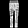
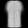
Loading recorded latent path…
Continuous pixels do not guarantee meaningful objects all along the path.
Course experiment · unchanged section-2 checkpoint · first validation T-shirt, trouser, and ankle boot · 21 recorded positions per path. Map: actual μ coordinates, no projection. Fashion-MNIST Xiao et al. (2017); latent exploration Kingma & Welling (2014).
Inspect the draws you did not get to choose
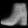
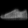
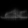
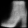
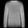
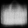
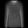
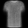
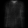
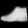
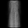
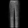
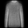
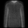
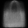
Sixteen consecutive prior draws. Which shapes are convincing—and which are ambiguous?
Soft edges
These are decoder mean pixels. Inspect detail, not just the outline.
Uneven appearances
A few recognizable shapes do not establish coverage.
Keep the failures
Use fixed, unfiltered draws when comparing checkpoints.
Actual outputs · same two-dimensional MLP, ten epochs · first 16 N(0,I) draws, seed 619 · no selection by appearance · decoder means, not sampled pixels. Course experiment on Fashion-MNIST Xiao et al. (2017).
Does the decoder use the image’s code?
Observed x
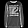
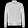
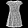
Paired code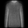
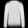

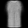
Reassigned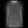


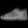
Keep the weights and the decoded samples.
Reassign each code to another image.
What should happen to reconstruction cost?
1,024 held-out images · 8 draws each
Paired255.4
Reassigned836.6
Pixel-summed BCE / image · lower is better
Same scale, zero origin · mean KL = 6.23
The pairing matters in this model.
Posterior collapse: q(z ∣ x) ≈ p(z), with little image information in z.
Near-zero KL + little effect from reassignment is a warning sign.
Near-zero KL + little effect from reassignment is a warning sign.
Measured intervention, not a second trained model · first four validation cases shown, first posterior draw · cyclic code reassignment over 1,024 images · seed 620. Collapse reference: Bowman et al. (2016), §3.1.
Close the loop: generate without an input
You have a trained VAE. Produce 32 new 28 × 28 images, with no observed x.
01 · CODE SOURCE
Where do the
32 codes come from?
02 · EXECUTION PATH
Which trained modules
must run?
03 · EVIDENCE
What would you inspect
before claiming success?
PAUSE60 secondsTrace the path and give one limitation of your proposed quality check.
WORKED SOLUTION
z ∼ N(0, I)
→
[32, 2]
Fixed decoder
→
Encoder is not needed
32 mean images
[32, 1, 28, 28]
Inspect unfiltered prior draws and failures; a small gallery cannot establish coverage or novelty.
Training made this path possible:
reconstruction + KL, optimized through z = μ + σ ⊙ ε.
reconstruction + KL, optimized through z = μ + σ ⊙ ε.
Synthesis of the trained course model · these outputs are decoder means; observation sampling is a separate step. Variational training and generation: Kingma & Welling (2014).
Deep Learning · Chapter 11